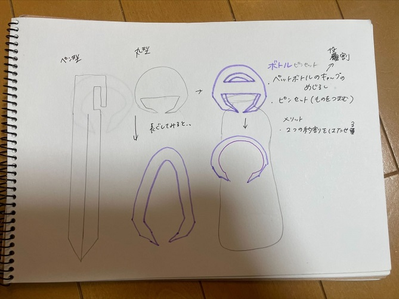

2way丸形ピンセット
想像段階の手書きスケッチ①


今まで見たことのないピンセットを想像して、思い浮かんだオリジナルなピンセットのスケッチを描いてみました。
現実的ではなくても、思いたったらすぐにスケッチすることによってよりアイデアが膨らむのでとにかく書いてみることが大切だと感じました。
＊スケッチする上で大事なポイント＊
思いついたらすぐにスケッチする。どんな役割をするのかちょっとしたことをメモすることが大切。
どんな物なのか、どのように使うのか、役割、メリット、デメリットなど…
作品の説明
この作品は、2つの役割を果たす2way式のピンセットです。
1つは、一般的なピンセットの役割と同じでものを摘まむ、挟む。もう一つは、ペットボトルを回しやすくする役割があります。
一般的には挟むことができるのがピンセットですが、あえて他の役割ができるものを考えました。
また、ピンセットを持つ時は２本の指で摘まむように持ちます。
しかし、指の形に添った丸い形のものが持ちやすいのではないかと思い丸形のピンセットを作ろうと思いました。
実際に作った作品
←実際の画像
大きさは少し小さく、ペットボトルに付けるにはかなり力がいる。幅が太いので凄く堅く、ピンセットの物を摘まむ役割は果たしていない。
持ったときは手にフィットしやすいので想像通りの形にすることができました。
設計ファイルｖ1
改善後
←実際の画像
前回の時に分厚すぎてピンセットの役割を果たせていなかったので幅を調整してみました。
ただ全ての幅を薄くするのではなく、ものを摘まむ時に薄くて摘まんだものが落ちたり折れたりするのを防ぐために、
先端の部分はあえてそのままの厚さにしました。ペットボトルにもはめることができるので、問題点を解決し作り直すことで自分の考えたことを
形にすることができたので良かったです。
設計ファイルｖ2
この作品を作ろうという想いに至ったのか…
ありきたりなピンセットではなく、どのような世代の人でも簡単に力を入れやすく使いやすいものを作りたいと思ったからです。
また、2wayにしてペットボトルにはめられるようにしようと思ったきっかけは、
大学でペットボトルを利用している人が多く何か目印になるものがあれば良いと考えていました。
さらに、色や柄を付けたりすると自分好みのデザインにもできるので楽しめると感じたからです。